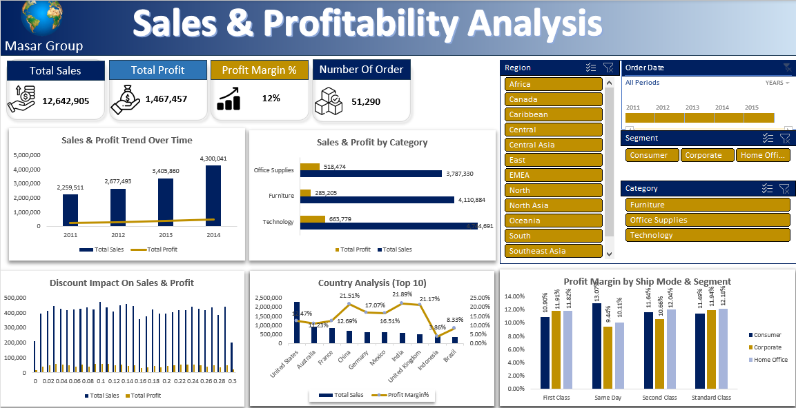

Global Superstore Sales Dashboard
An interactive Excel dashboard on four years of global retail orders. It shows where the business grows and where it loses money.
$12.6M sales
$1.47M profit
11.6% margin
$1.47M profit
11.6% margin
- Question
- Which categories, regions and countries make profit, and which lose it?
- Data
- 51,290 order lines, 25,035 orders and 4,873 customers, from 2011 to 2014. No missing values or duplicates.
- Insights
- Sales grew every year, from $2.26M to $4.30M (+90%), while margin stayed near 11 to 12%.
- Furniture has $4.1M in sales but only a 6.9% margin. Technology earns 14% and the most profit ($664K).
- Tables is the only sub-category that loses money: -$64K on $757K of sales.
- Turkey (-$98K), Nigeria (-$81K) and the Netherlands (-$41K) are the biggest loss-making countries.
- Southeast Asia earns only 2% margin on $884K of sales. North Asia earns 19.5%.
- 24% of order lines lose money, adding up to -$921K.
- Action
- Reprice or review the Tables line.
- Audit pricing and shipping costs in Turkey, Nigeria and the Netherlands.
- Put more marketing into Technology (Copiers, Phones) and the high-margin regions: North Asia, Central Asia and North.
- Find why Southeast Asia and EMEA earn so little margin.
